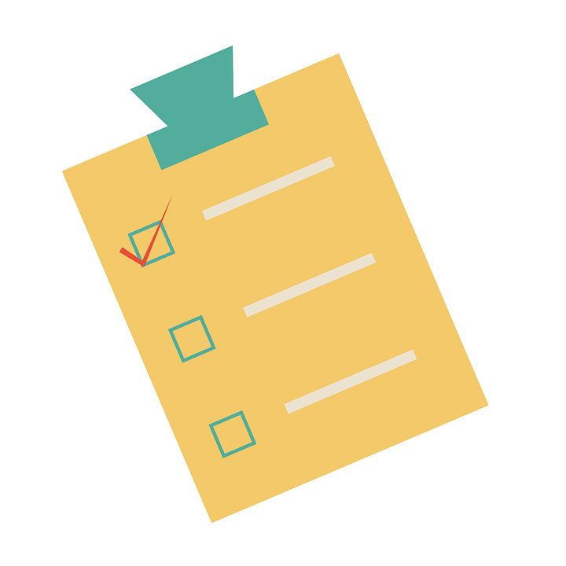
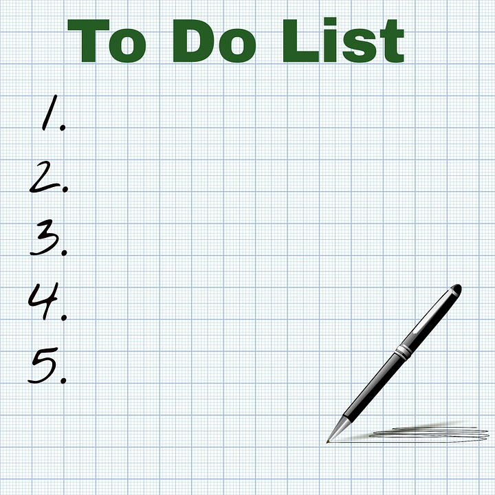

Objectives
Incorporate sessions tracking into the todo app
Setup
The starting point for this lab is the solutions to the Todo List app from the last lab. You will need to have completed these exercises in order to proceed.
If you still have some exercises not completed, then perhaps download this solution here:
and import into Idea as we have described in earlier labs. This solution includes:
- Exercise 1: Yaml + Bootatrap
- Exercise 2: Tables
- Exercise 3: Delete button
- Exercise 4: Delete Implementation
- Exercise 5: Admin Feature
Review each of these exercises, and make sure you can follow the essentials of the implementation.
Views
Assuming you are working from the sample solution - or your own completed todolist - we will start with the View.
Menus
Replace the existing menu partial with the following:
app/views/tags/menu.html
<nav class="ui menu">
<header class="ui header item"> <a href="#"> Todo List </a></header>
<div class="right menu">
<a id="dashboard" class="item" href="/dashboard"> Dashboard </a>
<a id="about" class="item" href="/about"> About </a>
<a id="logout" class="item" href="/logout"> Logout </a>
</div>
</nav>
<script>
$("#${_id}").addClass("active item");
</script>Introduce this new menu alongside the existing one:
app/views/tags/welcomenenu.html
<nav class="ui menu">
<header class="ui header item"> <a href="#"> Todo List </a></header>
<div class="right menu">
<a id="signup" class="item" href="/signup"> Signup </a>
<a id="login" class="item" href="/login"> Login </a>
</div>
</nav>
<script>
$("#${_id}").addClass("active item");
</script>New Views
Bring in these new views:
app/views/login.html
#{extends 'main.html' /}
#{set title:'login' /}
#{welcomemenu id:"login"/}
<div class="ui two column middle aligned grid basic segment">
<div class="column">
<form class="ui stacked segment form" action="/authenticate" method="POST">
<h3 class="ui header">Log-in</h3>
<div class="field">
<label>Email</label> <input placeholder="Email" name="email">
</div>
<div class="field">
<label>Password</label> <input type="password" name="password">
</div>
<button class="ui blue submit button">Login</button>
</form>
</div>
<div class="column">
<img class="ui image" src="/public/images/todo-2.jpg">
</div>
</div>views/app/signup.html
#{extends 'main.html' /}
#{set title:'Signup' /}
#{welcomemenu id:"signup"/}
<div class="ui two column grid basic middle aligned segment">
<div class="column">
<form class="ui stacked segment form" action="/register" method="POST">
<h3 class="ui header">Register</h3>
<div class="two fields">
<div class="field">
<label>First Name</label>
<input placeholder="First Name" type="text" name="firstname">
</div>
<div class="field">
<label>Last Name</label>
<input placeholder="Last Name" type="text" name="lastname">
</div>
</div>
<div class="field">
<label>Email</label>
<input placeholder="Email" type="text" name="email">
</div>
<div class="field">
<label>Password</label>
<input type="password" name="password">
</div>
<button class="ui blue submit button">Submit</button>
</form>
</div>
<div class="column">
<img class="ui image" src="/public/images/todo-1.png">
</div>
</div>Finally for this step, change one line in the start.html view, from this:
...
#{menu id:"start"/}
...to this:
...
#{welcomemenu id:"start"/}
...Save everything now, and make sure that the app launches:
The app should start with a new menu:
However, the menu items will not work yet (try them).
Accounts Routes + Controler
Introduce the following new routes into the conf/routes file:
conf/routes
GET /signup Accounts.signup
GET /login Accounts.loginThese routes lead to an accounts controller, which we can now bring in:
app/controllers/accounts.java
package controllers;
import play.Logger;
import play.mvc.Controller;
public class Accounts extends Controller
{
public static void signup()
{
render("signup.html");
}
public static void login()
{
render("login.html");
}
}Restart the app now, and you the signup/login forms should be rendered:
The submit buttons will not work yet however (try them).
Notice we seem to have missing images in the above. Download these two images here:
 
Place them in the public/images folder in your project. If this goes correctly, the views should look like this:


Member model
We need a model to represent users (we will call them members) signed up to our application. Here is the class:
app/models/Member.java
package models;
import play.db.jpa.Model;
import javax.persistence.CascadeType;
import javax.persistence.Entity;
import javax.persistence.OneToMany;
import java.util.ArrayList;
import java.util.List;
@Entity
public class Member extends Model
{
public String firstname;
public String lastname;
public String email;
public String password;
@OneToMany(cascade = CascadeType.ALL)
public List<Todo> todolist = new ArrayList<Todo>();
public Member(String firstname, String lastname, String email, String password)
{
this.firstname = firstname;
this.lastname = lastname;
this.email = email;
this.password = password;
}
public static Member findByEmail(String email)
{
return find("email", email).first();
}
public boolean checkPassword(String password)
{
return this.password.equals(password);
}
}Look carefully at this class. It is relatively simple, except we see each menber has a OneToMany relationship to our existing todo class:
@OneToMany(cascade = CascadeType.ALL)
public List<Todo> todolist = new ArrayList<Todo>();We already have a data.yml file containing some todos:
conf/data.yml
Todo(t1):
title: Make tea
Todo(t2):
title: Go for snooze
Todo(t3):
title: Make more teaWe can extend this now, with some member objects:
Todo(t1):
title: Make tea
Todo(t2):
title: Go for snooze
Todo(t3):
title: Make more tea
Member(m1):
firstname: homer
lastname: simpson
email: homer@simpson.com
password: secret
Member(m2):
firstname: marge
lastname: simpson
email: marge@simpson.com
password: secretRestart the app now - and browse to the database:
When you connect, you should be able to see the Members table containing the users above:

You should make sure you can view the above. If you cannot, it may be:
- incorrect connection string in the database login panel:

- you connect before the app at properly launched. Do not browse to database until you have seen the first screen in the browser
- you are connect to a previous version of the app. Just close the browser window and connect again.
Before proceeding, try to work out a procedure for reliably and consistently connecting to the database.
Database Errors
One last small change. Occasionally you will see an error from the app related to the database, particularly when you are making some small adjustments to the app, but without restarting
Here is a small change to Bootstrap.java which will fix this problem:
app/Bootstrap.java
import java.util.List;
import play.*;
import play.jobs.*;
import play.test.*;
import models.*;
@OnApplicationStart
public class Bootstrap extends Job
{
public void doJob()
{
if (Member.count() == 0)
{
Fixtures.loadModels("data.yml");
}
}
}Signup
Review our signup form, and notice the action the form triggers:
app/views/signup.html
...
<form class="ui stacked segment form" action="/register" method="POST">
...We now implement this route:
conf/routes
POST /register Accounts.registerand here is the implementation of the matching action in the Accounts controller:
app/controllers/Accounts.java
...
public static void register(String firstname, String lastname, String email, String password)
{
Logger.info("Registering new user " + email);
Member member = new Member(firstname, lastname, email, password);
member.save();
redirect("/");
}
...Restart the app now - and try the signup form. Register a new Member. Explore the database to see if the Member is actually created in the members table.
Login & Logout
Now for the login form - a new route:
conf/routes
POST /authenticate Accounts.authenticateapp/controllers/Accounts.java
...
public static void authenticate(String email, String password)
{
Logger.info("Attempting to authenticate with " + email + ":" + password);
Member member = Member.findByEmail(email);
if ((member != null) && (member.checkPassword(password) == true)) {
Logger.info("Authentication successful");
session.put("logged_in_Memberid", member.id);
redirect ("/dashboard");
} else {
Logger.info("Authentication failed");
redirect("/login");
}
}
...Restart the app now, and try to log in. If you try with one of the preloaded user details, you should be in to the dashboard.
If you try to logout, you get a 404. We can now implement this as well:
conf/routes
GET /logout Accounts.logoutapp/controllers/Accounts.java
...
public static void logout()
{
session.clear();
redirect ("/");
}
...We should now be able to log in and log out.
Try the following:
- Log in as Homer, and create some todos
- Log out
- Log in as Marge - what todos are presented when marge logs in?
You might notice that the same todos are presented to each member. Clearly there is something wrong here - we should be segmenting them per user.
Current User
To complete the app, a new method in the Accounts controller:
app/controller/Accounts.java
...
public static Member getLoggedInMember()
{
Member member = null;
if (session.contains("logged_in_Memberid")) {
String memberId = session.get("logged_in_Memberid");
member = Member.findById(Long.parseLong(memberId));
} else {
login();
}
return member;
}
...The Dashoard index method can now be updated:
app/controllers/Dashboard.java
...
public static void index()
{
Logger.info("Rendering Dashboard");
Member member = Accounts.getLoggedInMember();
List<Todo> todolist = member.todolist;
render("dashboard.html", member, todolist);
}
...Notice how we are changing how we retrieve the todos. Also, we are not passing member as well as todolist to the view.
We also need a new version of the addTodo method:
public static void addTodo(String title)
{
Member member = Accounts.getLoggedInMember();
Todo todo = new Todo(title);
member.todolist.add(todo);
member.save();
Logger.info("Adding Todo" + title);
redirect("/dashboard");
}We can make use of the member in the dashboard view, replacing the header with the following:
app/views/dashboard.html
...
<header class="ui header">
${member.firstname} ${member.lastname}'s Todo List
</header>
...Restart the app now - and as different member, create some todos. Make sure that each member only sees his/her own todos.
We might also change the data.yml file to associate the todos with the members:
conf/data.yml
Todo(t1):
title: Make tea
Todo(t2):
title: Go for snooze
Todo(t3):
title: Make more tea
Member(m1):
firstname: homer
lastname: simpson
email: homer@simpson.com
password: secret
todolist:
- t1
- t2
Member(m2):
firstname: marge
lastname: simpson
email: marge@simpson.com
password: secret
todolist:
- t3Restart the app, and verify that the indicated todos are visible when the user logs in.
Delete Todos
Delete a todo will cause an error:

We will need to rethink how we do the todo delete method.
The main problem is that any given todo now 'belongs' to a member - so just deleting it will cause a problem for the 'integrity' of the database.
Here is a revised version of the method:
app/controllers/Dashboard.java
...
public static void deleteTodo(Long id, Long todoid)
{
Member member = Member.findById(id);
Todo todo = Todo.findById(todoid);
member.todolist.remove(todo);
member.save();
todo.delete();
Logger.info("Deleting " + todo.title);
redirect("/dashboard");
}
...This version is different:
- we are expecting the id of the member + the id of the todo
- We fetch both the member and the todo from the database
- remove it from the member list
- save the member
- delete the todo
For this to work, we need this revised route:
conf/routes
GET /dashboard/{id}/deletetodo/{todoid} Dashboard.deleteTodo(replace the existing deleteTodo route)
We also need a completely revised button in the dashboard:
<td> <a href="/dashboard/${member.id}/deletetodo/${todo.id} " class="ui tiny red button"> Delete </a> </td>Restart the app - and verify that the todos can now be deleted successfully.
Exercises
Archive of the project so far:
Exercise 1: Locate the Session Cookie in Chrome Developer Tools
The developer tools in chrome allow you to see in detail the workings of the browser. In particular, under Application->Cookies we can see the cookie our application has created:
If we log out, it will be deleted:

Experiment with locating the cookie - try to delete it manually, and see what effect it has on the app.
The developer tools can also reveal the cookie in transit during a request:

See if you can locate the above view in Chrome.
Exercise 2: Introduce sessions into Playlist.
This is the final playlist project:
Using this, or your own completed solution from lab 09, try to incorporate the session support we have just implemented in todo into the playlist app.
Essentially, we would like only members to be able to use the playlist app, and the members playlists are kept separate from other members.